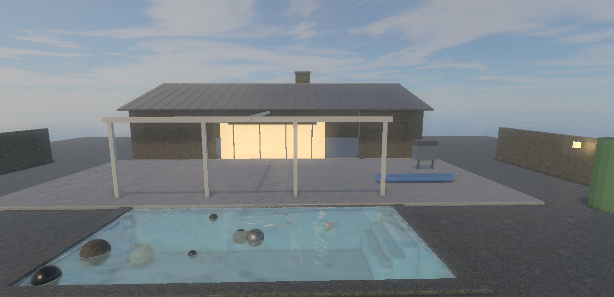

T850 v0.1.0WEBGPU / 2026
Real-time fluid in the browser: Water Simulation 2026
Checking WebGPU...
Controls
- Fly
- W A S D, Space or Q to rise, E to sink, Shift to go faster
- Look
- Hold the left or right mouse button and drag
- Grab a ball
- Hold Ctrl, click a ball and drag it; the wheel pushes it away or pulls it closer
- Balls
- K drops ten more; R twice resets the pool
- Wind
- ↑ ↓ speed, ← → heading, V shows the wind arrow
The bar at the bottom of the view has the same buttons; hold Ctrl to click them. A touch screen can switch on the touch controls with the Touch box in the header.
- Move and look
- Left stick flies, right stick turns; dragging the view away from the balls turns too
- Up and down
- The arrow buttons; the lightning button flies faster
- Grab a ball
- Touch a ball and drag it around the pool
- Balls
- +10 drops ten more; the circular arrow resets the pool (press it twice)
- Wind
- The bar at the top of the view: − and + set the speed, « and » the heading
Touch in the header hides the controls; OnTop lays them over a full-screen view.
- Move and look
- Left stick flies, right stick turns
- Up and down
- The arrow buttons; the lightning button flies faster
- Grab a ball
- Touch a ball and drag it
- Balls
- +10 drops ten more; the circular arrow resets (press it twice)
- Wind
- The bar at the top of the view
Turn the phone sideways for a larger view. The water solver is heavy for a phone GPU, so 960 x 540 is the default.